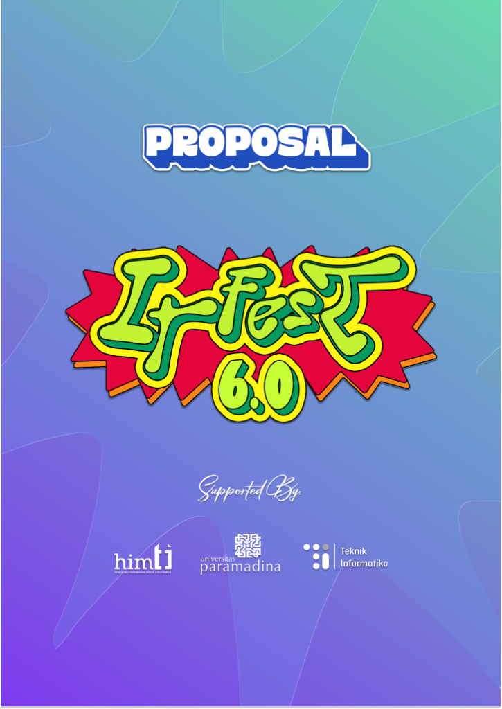
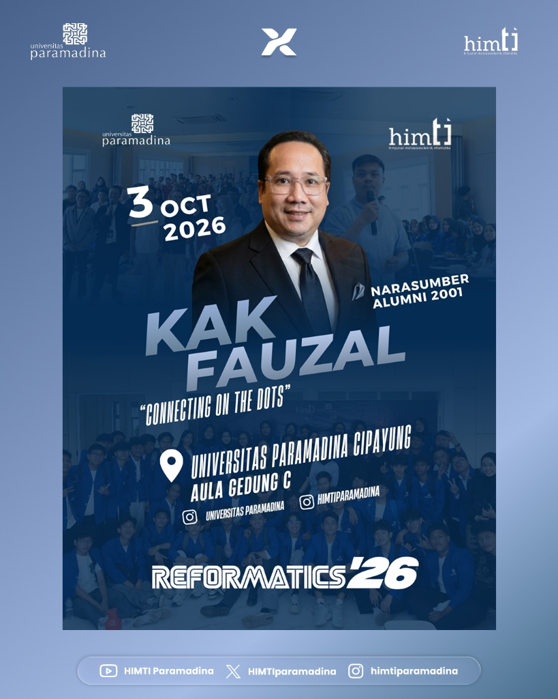

Daftar Proyek & Praktikum

design untuk proposal kegiatan itfest

design untuk narasumber yang hadir dalam reformatics
design untuk proker himpunan teknik informatika

design untuk proposal kegiatan itfest

design untuk narasumber yang hadir dalam reformatics
design untuk proker himpunan teknik informatika